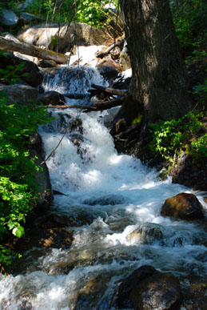
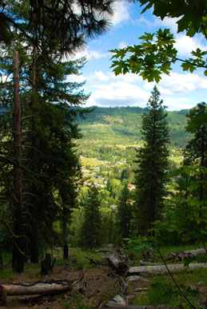

Tierra Peak Hiking arranges a wide variety of day hikes for families, friends, and teams. Imagine yourself hiking along a creek or viewing the beauty of the valley from the peak of a hiking trail. Stop by one of our offices to see which hikes are available.

Take a hike along Icicle Creek and watch the majestic waters flow. Enjoy the soothing sounds of the rushing water while standing amidst the surrounding trees. This hike is rated a double-boot because climbing is moderately strenuous. However, the land immediately around the creek is flat and allows for frequent rest stops.
There are so many hikes to choose from. Visit our Web site or stop by one of our offices to learn about other exciting hikes. We can design a hike to meet your needs or the desires of your group.

This half-day hike continues with a climb to one of the lower peaks(1,200 feet) of the Tierra Mountains. This spot is chosen for its wonderful view of the valley below. Beautiful photos of the valley and the surrounding woods can be taken at this stop.
There are many other full-day and half-day scenic hikes that you can experience with Tierra Peak Hiking. You can search for your dream hike by place or activity level.
These pictures show just a sample of the many beautiful sights that you can do see while enjoying your hike.
To book your own trip, please call us at (999) 555-TIERRA or e-mail us at tierrapeak@isp.com. If you use e-mail, please include the following information: (1) your address and phone number, (2) a list of your favorite hiking activities, and (3) a few days and times that are convenient for us to contact you. We will respond with an e-mail message when we receive your request.